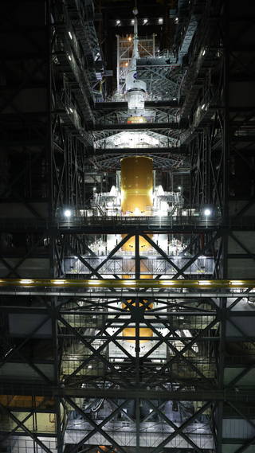

NASA’s Orion spacecraft is assured onto NASA's compelling and powerful Space Launch System rocket. It’s unified system is entering the final stage of preparations until it takes a flight test to the Moon. The mission Artemis I is said to pave the way for a flight test with crew in the future. With stacking already concluded, a series of interspersed tests now sit between the mega-Moon rocket and intended liftoff for deep space, estimated to be in February 2022. The team working on this ambitious project has demonstrated tremendous dedication preparing for the launch of Artemis I. While there is still work to be done to get to launch, with continued integrated tests, seeing the fully stacked SLS is most certainly going to be an achievement to look upon. Each of the test campaigns will evaluate the rocket and spacecraft as a unified system for the first time, building upon each other and culminating in a simulation at the pad to prepare for the long-awaited launch day.

NASA completed stacking Oct. 21, 2021, of the agency's Space Launch System rocket and Orion spacecraft for the Artemis I uncrewed mission around the Moon. The stacking operations were conducted inside the Vehicle Assembly Building at NASA's Kennedy Space Center in Florida.
Credits: NASA